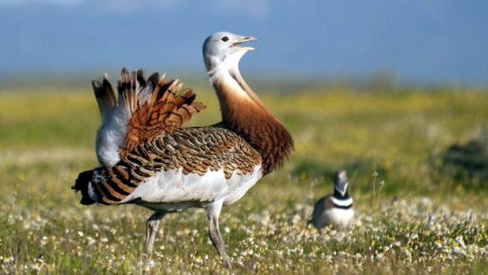
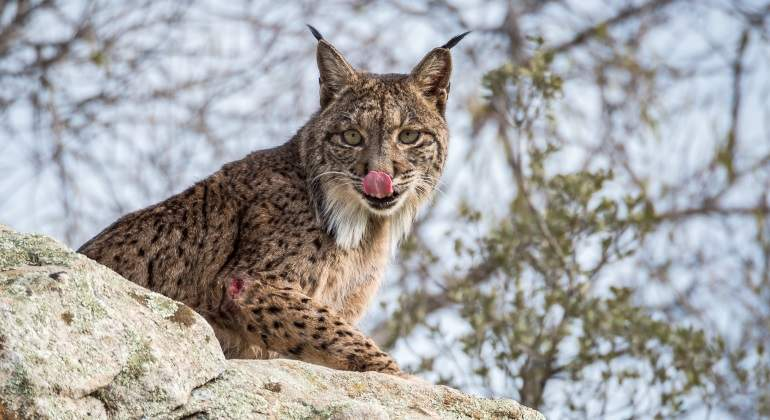

- Fartet
- Cernicalo
- Aguila Perdicera
- Avutarda 
- Nutria
- Lince 

Población desconocida
Aphanius iberus (fartet en castellano y valenciano; en este último también fartonet —diminutivo a veces usado en la Comunidad Valenciana— o peixet de sequiol) es una especie de pez ciprinodontiforme de la familia Cyprinodontidae. Es una de las especies de vertebrados ibéricos en mayor peligro de extinción.

5.000
El cernícalo primilla (Falco naumanni) es una especie de ave falconiforme de la familia Falconidae que se extendía por casi la totalidad de la península ibérica, sur de Francia, sur de Italia, los Balcanes y desde el mar Caspio y Anatolia por gran parte de Asia, también se encuentra en el norte de África desde Marruecos hasta Egipto. No se conocen subespecies.

Entre 860 y 1100
Es un ave rapaz diurna de unos 70 cm de longitud, con un peso de entre 1,6 y 2,2 kg . De aspecto grande y fuerte, los adultos presentan dorso marrón claro y partes inferiores más claras, blanco-amarillentas con trazos oscuros.
8.000
La avutarda común es una especie de ave otidiforme de la familia Otidae, el único miembro del género Otis, que da nombre a la familia. Se distribuye por Europa y a través de Asia hasta China, además del norte de África.

Entre 1000 y 2000
Los lutrinos, conocidos comúnmente como nutrias, son una subfamilia de mamíferos carnívoros de la gran familia Mustelidae. Existen 13 especies de nutrias repartidas en 7 géneros, con una distribución de la población prácticamente mundial.
1365
Lynx es un género de mamíferos carnívoros de la familia Felidae coloquialmente conocidos como linces. Se conocen cuatro especies caracterizadas por su tamaño medio, fuertes patas, largas orejas, cola corta y cuerpo más o menos moteado.